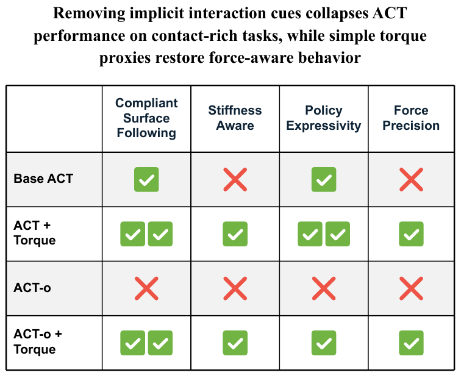
논문 Fig. 1: 저자의 정성 요약. 목표를 follower로 바꾼 ACT-o는 모든 항목에서 실패하고, 토크를 넣으면 회복된다.
구현 가능성: 공식 재현은 불가능하다(코드·데이터 미공개, ALOHA Solo 필요). 아이디어는 ACT·LeRobot에서 입력 차원과 목표 열만 바꾸면 되므로 쉽다. 이 맥에서는 표·toy 재계산까지 끝났고, 시뮬레이션 학습은 torch·mujoco 설치 승인과 원조 ACT의 .cuda() 수정이 필요하다.
| 항목 | 내용 |
|---|---|
| 제목 | Beyond Implicit Force: Evaluating Explicit Force-Torque Proxies in Action Chunking with Transformers |
| 저자 | King Hang Wong, Lingqiao Liu, Feras Dayoub (Australian Institute for Machine Learning, Adelaide University) |
| 버전 | arXiv:2607.14578v1 (2026-07-16 제출, cs.RO), 8쪽 |
| 학회 | IROS 2026 채택 (arXiv comments: "Accepted to IROS 2026") |
| 라이선스 | CC BY 4.0 (arXiv abs 페이지). PDF 안에 다른 권리 표기 없음 |
| 코드·데이터 | 공개되지 않음(2026-11-09 확인). 기반 코드는 ACT·ALOHA 공개 저장소(02 §5) |
| 분석일 | 2026-11-09 |
한 줄 요약: ALOHA식 leader-follower 원격조작으로 모은 데이터에서 ACT가 보이는 "힘을 아는 듯한" 행동은, 학습 목표인 leader 관절각과 실제 follower 관절각의 차이 δ = q_leader − q_follower에서 나온다고 보고, (1) 목표를 follower의 미래 상태로 바꾼 ACT-o로 이 단서를 지우면 접촉 과제가 무너지는지, (2) 모터 전류로 만든 관절 토크 대리값 τ = k_t I를 입력에 넣으면 되살아나는지를 실물 ALOHA Solo의 과제 4개로 시험한 연구입니다.
주장(Sec. I 기여 목록, Abstract):
결론 문장은 "토크 신호가 있으면 단순한 대리값이 암묵적 단서와 같거나, 넘어서거나, 더 강화한다(matches, surpasses, or further enhances)"입니다(Abstract).
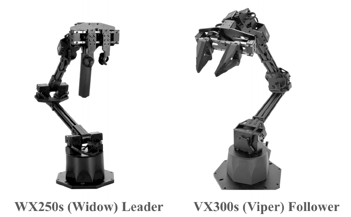
논문 Fig. 2: ALOHA Solo의 WidowX-250s leader(왼쪽)와 ViperX-300s follower(오른쪽). 관절 공간 1:1 대응. © 저자, CC BY 4.0.
ALOHA에서는 사람이 leader 팔을 움직이고, follower 팔이 위치 제어로 leader 관절각을 따라갑니다. 기록되는 행동은 leader 관절각, 관측은 follower 관절각입니다. 접촉 중 follower가 막히면 둘 사이에 위치 차이가 생기는데, 논문은 이를 **암묵적 상호작용 단서(implicit interaction cue)**라 부릅니다. 단서는 "명시적 힘 모델은 아니지만 자유 공간 운동과 큰 하중 접촉을 가르는 잠재 신호"입니다(Sec. I).
이 단서가 없는 수집 방식으로 kinesthetic teaching(사람이 로봇을 직접 잡고 움직임, leader가 없음)과 추종 오차를 줄인 고투명 인터페이스를 듭니다(Sec. I, III-A). 질문은 "ACT의 접촉 성능은 이 단서에 얼마나 기대는가, F/T 센서 없는 플랫폼에서 내장 토크 신호가 그것을 대신할 수 있는가"입니다.
CVAE encoder E_φ가 현재 상태와 목표 행동 열을 latent z로 보내고, Transformer decoder D_θ가 z와 현재 관측으로 행동 chunk를 복원합니다.
L_ACT = E_z~Q [ ‖a_{t:t+n} − â_{t:t+n}‖² ] + β D_KL( Q(z | s_t, a_{t:t+n}) ‖ P(z | s_t) ) (Eq. 1)
표준 ACT의 목표는 leader 관절각 A = {q_leader,t, …, q_leader,t+n}이고, 이 목표가 δ를 품고 있다는 것이 논문의 출발점입니다(Sec. III-B "Implicit Force via Joint Discrepancy").
decoder 목표를 follower의 미래 관절각 Q = {q_follower,t+1, …, q_follower,t+n}으로 바꾸고, CVAE encoder도 leader 행동 대신 Q를 받습니다(Sec. IV-C).
L_rec = E_{z,O,Q} [ ‖Q − Q̂(z, O)‖² ] (Eq. 3)
L_CVAE = L_rec + β D_KL[ q(z | Q, [τ]) ‖ p(z) ] (Eq. 5)
[τ]는 토크 변형에서만 들어가는 항입니다. 실행할 때는 예측한 follower 관절각을 그대로 위치 명령으로 보냅니다(Table I, II).
ViperX follower의 서보가 주는 effort(전류)를 제조사 토크 상수로 바꿔 τ = k_t I를 씁니다(Sec. V-A). 관절 토크와 말단 외력의 관계는 다음과 같습니다.
τ = J(q)ᵀ F_ext + τ_dyn(q, q̇, …) (Eq. 2)
τ_total = M(q) q̈ + C(q, q̇) q̇ + G(q) + τ_ext (Eq. 4)
준정적(|q̈|, |q̇| → 0)이면 G(q)와 τ_ext만 남습니다. 논문은 중력·마찰 보상 모델 없이 τ_total을 그대로 입력하고, 정책이 G(q)를 암묵적으로 보정하기를 기대합니다(Sec. IV-B). "τ_dyn을 따로 계산할 필요가 없다"는 것도 주장입니다(Sec. III-C).
주입 방식(Sec. IV-B "Injection Method"): 관절각 7개와 effort 7개를 이어 붙인 14차원 벡터를 공유 임베딩 ℝ¹⁴ → ℝ^{d_hidden}으로 투영해 CVAE encoder와 Transformer encoder에 넣습니다(Fig. 3). 공개 ACT 코드는 양팔 ALOHA용으로 상태 차원 14를 하드코딩해 두었으므로(detr/models/detr_vae.py:230, state_dim = 14 # TODO hardcode), 한 팔 7 + effort 7은 구조 변경 없이 같은 자리에 들어갑니다(04 D3, 추정).
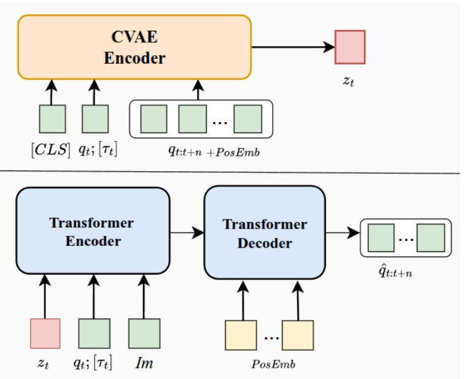
논문 Fig. 3: 토크 변형의 CVAE encoder(위)와 Transformer(아래). q_t; [τ_t]가 같은 토큰으로 들어간다. © 저자, CC BY 4.0.
| 변형 | 목표 | 힘 정보 |
|---|---|---|
| Base ACT | leader (A) | 암묵적(δ) |
| ACT-o | follower (Q) | 없음(δ 제거) |
| ACT + τ | leader (A) | 혼합(δ + τ) |
| ACT-o + τ | follower (Q) | 명시적(τ만) |
03 §8).| 과제 | 시험하는 것 | 성공 기준 |
|---|---|---|
| Board Wipe (Fig. 5) | 표면 추종 + 수직력 | 표시가 완전히 지워지거나, 지나간 자리에 눈에 보이는 줄무늬가 남음 |
| Plug Insert (Fig. 7) | 기울어진 플러그를 톡톡 쳐서 세운 뒤 수직으로 눌러 꽂기 | 꽂힘. 첫 시도가 플러그에 닿고 실패하면 두 번째 시도를 허용하고 두 번을 한 rollout으로 셈(Table IV 캡션) |
| Soft Bottle Press (Fig. 6) | 같은 모양 병의 두 상태: 잠김(High-Stiffness), 열림(Low-Stiffness) | 열린 병은 끝까지 누르고, 잠긴 병은 저항을 느끼면 물러남 |
| Foam Stop (Fig. 8) | 무늬 없는 검은 폼에 가볍게 닿으면 멈춤, 폼 높이 3단 | 성공률 대신 말단 F_x 곡선(Fig. 4) |
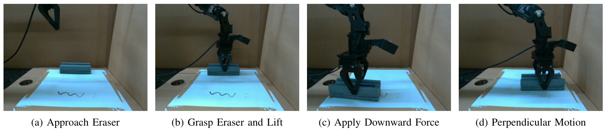
논문 Fig. 5: Board Wipe. 지우개를 잡고 들어 옮긴 뒤 아래로 누르며 옆으로 닦는다. © 저자, CC BY 4.0.
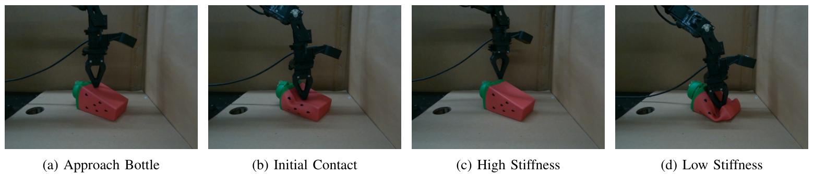
논문 Fig. 6: Soft Bottle Press. 첫 접촉 뒤 잠긴 병이면 물러나고(c), 열린 병이면 끝까지 누른다(d). © 저자, CC BY 4.0.
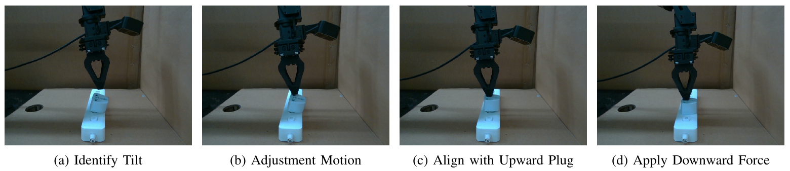
논문 Fig. 7: Plug Insert. 기울어진 플러그를 톡톡 쳐서 세운 뒤 아래로 눌러 꽂는다. © 저자, CC BY 4.0.
| 변형 | Bottle 전체 | 무른 병 | 단단한 병 | Plug 1회 | Plug 1 or 2회 | Wipe |
|---|---|---|---|---|---|---|
| Base ACT | 50% | 100% | 0% | 20% | 30% | 60% |
| ACT + τ | 70% | 60% | 80% | 40% | 70% | 90% |
| ACT-o | 25% | 50% | 0% | 0% | 0% | 15% |
| ACT-o + τ | 75% | 80% | 70% | 10% | 50% | 95% |
시행 수는 Bottle 모드마다 10회(변형당 20), Plug 10회, Wipe 20회입니다(Table IV 머리글·캡션). 이 표를 Fisher 정확검정, Holm 보정, 과제 합산 Mantel–Haenszel 검정으로 다시 본 결과는 03 §6에 있습니다. 요약하면 단서 제거(Base → ACT-o)와 토크 회복(ACT-o → ACT-o + τ)은 통계적으로 뚜렷하고, 토크가 Base ACT를 개선한다는 주장은 과제 하나씩으로는 유의하지 않으며 세 과제를 합쳐야 유의합니다.
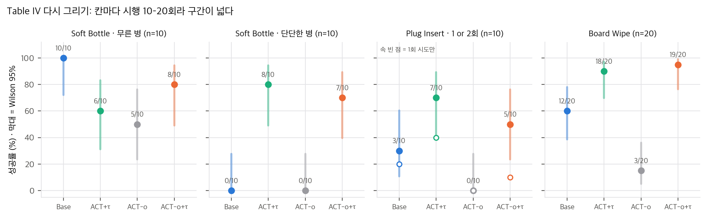
직접 그림: Table IV 성공률과 Wilson 95% 구간. Bottle은 모드별로 나눠 그렸다.
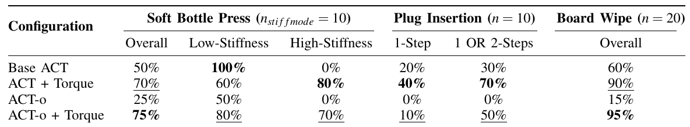
논문 Table IV 원본. 칸마다 시행 10–20회. © 저자, CC BY 4.0.
Fig. 4는 변형마다 10 rollout × 높이 3단(총 120회)의 말단 F_x(effort 단위) 평균 곡선입니다. 저자는 "모든 모델이 폼을 뚫거나 뜨지 않고 대략 맞는 높이에서 멈췄고, 토크 변형이 시연의 평형 F_x에 더 가깝게 수렴했다"고 씁니다(Sec. VI-B4). 그림을 눈으로 읽으면(±50 effort) 끝 구간(t ≈ 300)에서 시연과의 차이 평균은 토크 변형이 더 작지만, 높이 1에서는 ACT-o가 시연에 가장 가깝습니다. 신뢰 띠는 ±200 정도로 겹칩니다(03 §7). F_x는 중력을 보상하지 않은 effort에서 J(θ)로 환산한 값이라(Sec. V-D), 멈춘 자세가 다르면 접촉력이 같아도 값이 달라집니다.
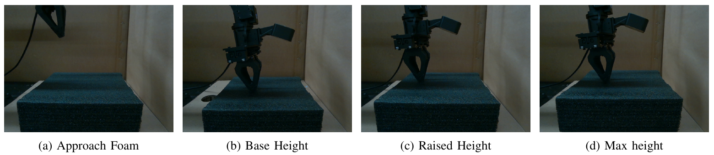
논문 Fig. 8: Foam Stop. 무늬 없는 검은 폼에 가볍게 닿으면 멈춘다. 폼 높이 3단. © 저자, CC BY 4.0.
imitate_episodes.py, 04 D2). δ는 목표에만 들어 있고, P 게인만 쓰는 위치 서보(공개 ALOHA 코드의 Position P gain 800, I gain 0, 04 D1)에서는 δ가 곧 누르는 힘을 만드는 명령 여유입니다(03 §1). ACT-o의 실패는 "힘을 감지하지 못해서"보다 "누르는 명령을 낼 수 없어서"로 더 직접 설명됩니다.03 §5). Wipe 95%는 성공 기준(줄무늬가 보이면 성공)이 약한 접촉으로도 채워졌을 가능성이 있는데, 접촉력은 보고되지 않았습니다.03 §6).03 §6). 저자가 말한 "두 시도에 걸친 adjustment-tap"을 성공으로 세는 규칙입니다. 1회 기준으로는 ACT-o + τ(10%)가 Base(20%)보다 낮습니다.03 §6).04 §3).스크립트는 analysis/table_check.py(Table IV·하이퍼파라미터 재계산, 결과 table_check_results.json), analysis/force_proxy_toy.py(1-DoF 물리 toy T1–T4, 결과 force_proxy_toy_results.json), analysis/plot_figures.py(그래프 4장)입니다. 모두 numpy·scipy, 단일 스레드, CPU에서 1–2초 안에 끝납니다. toy의 강성·질량·마찰 값은 가정이므로, 절대값이 아니라 비와 경향으로 읽어야 합니다.
공개 ALOHA 코드는 follower 서보를 Position P gain 800, I gain 0으로 설정합니다(aloha_scripts/robot_utils.py:174-175, 04 D1). 적분항이 없으면 하중이 걸린 정상상태에서 오차가 0으로 가지 않습니다. 관절 하나를 말단 등가 강성 K_p로 근사하면, 명령 q_cmd를 받은 follower의 준정적 평형은 다음과 같습니다.
K_p (q_cmd − q) + m g = F_contact (아래 방향 +, 1-DoF)
접촉면 강성 k_e: F_contact = k_e · max(q − q_surface, 0)
ALOHA 원격조작에서 q_cmd = q_leader이므로 K_p δ = F_contact − m g입니다. 사람이 "충분히 눌렀다"고 느낄 때까지 leader를 밀면, 그 leader 위치에는 시연 접촉력이 K_p로 나뉜 만큼의 여유가 들어갑니다. 학습된 Base ACT가 leader 목표를 재생하면 같은 δ가 다시 생기고, 같은 힘이 다시 나옵니다. δ는 정책이 읽는 입력이 아니라, 정책이 내보내는 명령 속에 들어 있습니다. ACT의 입력은 현재 follower 관절각 한 프레임과 이미지뿐이라(04 D2) δ를 볼 수 없습니다.
DexForce(arXiv:2501.10356)는 kinesthetic 시연에서 관측 위치 x_o에 측정 힘을 더한 목표 x_f = x_o + k_f f를 행동으로 씁니다. 재생 힘 배율은 G(k_f, k_e) = (1/k_e + k_f)/(1/k_p + 1/k_e)이고, k_f = 1/k_p일 때 G = 1, k_f = 0(관측 위치 그대로)이면 G = k_p/(k_p + k_e) ≈ 0입니다(dexforce/analysis/03_analysis.md §1).
leader-follower 원격조작은 이 목표를 센서 없이 자동으로 만듭니다. q_leader = q_follower + (F − m g)/K_p이므로, Base ACT의 목표는 k_f = 1/K_p인 force-informed target과 같습니다(사람이 직접 맞췄으니 G = 1). ACT-o의 목표는 k_f = 0인 경우입니다.
가정: K_p = 800 N/m(말단 등가값, P gain 레지스터 800을 환산한 값이 아님), 유효 중력 1.5 N(I 게인 0이라 처짐 1.9 mm), 시연 접촉력 6 N, 닦기에 필요한 최소 힘 2 N.
| 표면 강성 k_e (N/m) | follower 위치 (mm) | leader 위치 (mm) | 여유 δ (mm) | follower 목표 재생 힘 | 시연 대비 |
|---|---|---|---|---|---|
| 2,000 (무른 패드) | 3.00 | 8.62 | 5.63 | 2.79 N | 0.46 |
| 20,000 (지우개 + 보드) | 0.30 | 5.93 | 5.63 | 1.67 N | 0.28 |
| 200,000 (거의 강체) | 0.03 | 5.66 | 5.63 | 1.52 N | 0.25 |
leader 목표 재생은 모든 경우 6.0 N입니다. follower 목표의 힘은 거의 중력 처짐에서 나옵니다. 중력을 빼면 k_e = 20,000에서 0.23 N(DexForce의 G(0) = 800/20,800 = 0.038)입니다. 수직으로 누르는 과제라 중력이 ACT-o를 돕는 방향이고, 옆이나 위로 미는 과제에서는 이 도움도 없습니다.
정책의 위치 예측에 오차 σ가 있을 때(k_e = 20,000):
| σ (mm) | 0.5 | 1 | 2 | 4 | 8 |
|---|---|---|---|---|---|
| leader 목표: 힘 ≥ 2 N | 1.00 | 1.00 | 0.995 | 0.90 | 0.74 |
| follower 목표: 힘 ≥ 2 N | 0.20 | 0.34 | 0.42 | 0.46 | 0.48 |
| follower 목표: 접촉만 | 1.00 | 0.98 | 0.86 | 0.70 | 0.60 |
leader 목표는 여유 δ ≈ 5.6 mm 덕분에 예측이 몇 mm 틀려도 누르는 힘을 유지합니다. follower 목표는 접촉 여부부터 예측 오차에 좌우되고, 위로 틀리면 떠 버립니다. 논문이 본 ACT-o의 "hovering"(Sec. VI-B1)과 같은 모양입니다.
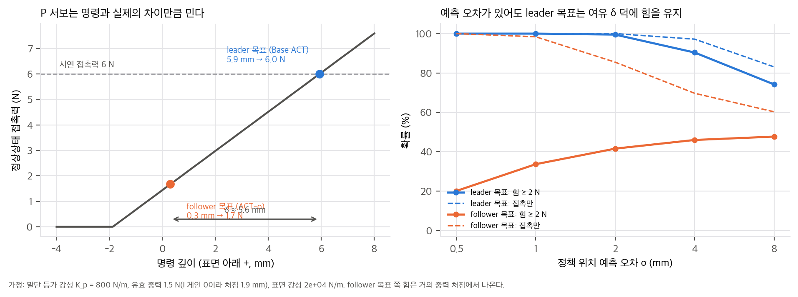
직접 그림(T1): 왼쪽은 명령 깊이와 정상상태 접촉력, 오른쪽은 위치 예측 오차에 따른 힘 유지 확률.
ACT는 현재 시점의 qpos 하나만 받습니다(속도·이력 없음, 04 D2). 무른 병과 단단한 병을 같은 속도로 누르면, 단단한 병에서는 follower가 멈추고 무른 병에서는 계속 내려갑니다. 하지만 같은 높이를 지나는 순간만 보면 두 경우의 qpos는 같습니다.
toy T2(20 mm/s 하강, 무른 병 150 N/m, 단단한 병 3,000 N/m, qpos 잡음 0.2 mm, 토크 잡음 0.15 N, 단단한 병이 멈춘 높이 이하 구간 2,965프레임):
| 특징 | 균형 정확도 |
|---|---|
| qpos 한 프레임 | 0.51 (우연 수준) |
| qpos 5프레임 차이(속도에 해당) | 0.96 |
| 토크 한 프레임 | 1.00 |
Base ACT가 단단한 병에서 0/10인 것(Table IV)과 맞습니다. Base ACT는 leader 목표로 누르는 힘은 낼 수 있지만, 지금 누르는 병이 어느 쪽인지는 입력에서 알 수 없습니다. 그래서 다수 모드(끝까지 누름)로 갑니다. 토크를 입력에 넣으면 이 정보가 한 프레임에 들어옵니다. 토크는 δ를 "대신"한다기보다, δ가 원래 주지 않던 감지 정보를 보탭니다. 다만 이 toy는 이력을 넣은 qpos(0.96)도 거의 같은 정보를 준다는 것을 보여 줍니다. 논문에는 "qpos 이력" 대조군이 없습니다.
τ_motor = k_t I
τ_joint = N η k_t I − τ_friction(q̇, 부하) (N: 감속비, η: 기어 효율)
τ_joint = J(q)ᵀ F_ext + G(q) + M(q) q̈ + C(q, q̇) q̇ (Eq. 2, 4)
논문은 τ = k_t I(Sec. V-A)만 쓰고 기어 손실과 마찰을 다루지 않습니다. 이 식에서 대리값의 오차원은 셋입니다.
가정: 지렛대 0.30 m, 기어 정지 마찰 0.25 N·m(균일 분포), 전류 잡음 0.05 N·m, 오경보 5% 문턱.
| 접촉력 (N) | 0.5 | 1 | 2 | 4 | 8 |
|---|---|---|---|---|---|
| 검출률 | 0.32 | 0.62 | 1.00 | 1.00 | 1.00 |
정지 마찰 띠는 약 0.83 N입니다. 수 N 이상의 사건(병 저항, 닦기 압력)은 전류로 충분히 잡히고, 1 N 아래의 가벼운 닿음은 잘 잡히지 않습니다. Foam Stop은 시연자가 "가벼운 저항"에서 멈추는 과제라 이 띠 근처에 있을 가능성이 큽니다. 모든 변형이 대략 맞는 높이에서 멈췄다는 결과(Sec. VI-B4)는 토크보다 시각·운동학이 높이를 알려 줬다는 해석과도 맞습니다.
중력: 자세가 −1 ~ 1 rad로 바뀌는 관절(τ_g = 2 cos q + 0.6 sin 2q)에서 접촉 토크 0.6–2.4 N·m를 같은 규칙으로 가르면, 보상 없이 검출률 0.84, 비접촉 구간으로 자세 특징(cos q, sin q, cos 2q, sin 2q)을 선형 회귀해 빼면 1.00입니다. 정책이 G(q)를 암묵적으로 배울 수 있다는 논문의 가정은 원리상 가능하지만, 그만큼의 표현력과 데이터를 쓰게 됩니다. 명시적으로 빼는 쪽이 싸고, 저자가 향후 과제로 든 "정규화된 대리값의 플랫폼 간 전이"에도 필요합니다.
논문은 추종 오차가 "접촉 시작, 제약 위반, 외부 저항과 상관한다"고 씁니다(Sec. I). toy T4는 공중 왕복(0–2 s) → 접근(2–3 s) → 누르며 닦기(3–6 s) 궤적을 1차 지연 서보(대역폭 12 rad/s)로 따라가게 했습니다.
| 지표 | 값 |
|---|---|
| 접촉 구간만 δ–힘 R² | 0.995, 기울기 0.807 N/mm(≈ K_p) |
| 전체 구간 δ–힘 R² | 0.874 |
| 자유 운동 중 최대 |δ| | 5.75 mm |
| 접촉 중 δ 중앙값 | 9.54 mm |
빠른 자유 운동의 추종 지연과 중력 처짐도 δ를 만듭니다. 이 toy에서 자유 운동 δ(최대 5.8 mm)는 접촉 δ(중앙값 9.5 mm)의 절반이 넘습니다. 그래서 δ는 "힘 + 속도 지연 + 중력"의 혼합이고, 힘 신호로 깨끗하지 않습니다. 이 점에서도 δ는 감지 신호보다 구동 여유로 읽는 편이 맞습니다.
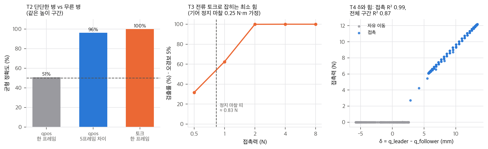
직접 그림: T2 강성 판별, T3 마찰 속 검출률, T4 δ와 접촉력.
ACT-o + τ의 목표도 follower 위치입니다. 학습 목표 안에는 시연에서 follower가 실제로 도달한 위치보다 깊은 명령이 없습니다. §1의 식으로 보면, 명령이 시연 follower 위치 범위 안에 있는 한 정상상태 힘은 follower 목표 재생 힘(T1에서 시연의 0.25–0.46배, 대부분 중력)을 넘지 못합니다. 토크 입력이 할 수 있는 일은 두 가지로 보입니다.
둘 다 시연 수준의 힘을 만들 필요는 없습니다. 그래서 Board Wipe의 95%는 "줄무늬가 보이면 성공"(Sec. V-E)이라는 기준이 약한 접촉으로도 채워졌기 때문일 수 있습니다. 대안 설명은 (a) 지우개·보드의 변형이 커서 follower 위치에 힘이 이미 들어 있거나(k_e가 작으면 0.46배까지), (b) 정책이 학습 범위 밖으로 더 깊은 위치를 외삽하는 경우입니다. 논문은 닦기 중 접촉력을 보고하지 않아서 어느 쪽인지 알 수 없습니다. 검증 가능한 예측은 "같은 과제에서 ACT-o + τ의 닦기 수직 effort가 Base ACT보다 작다"입니다.
과제별 성공 수(Bottle은 두 모드 합산 n = 20, Plug은 "1 or 2회" n = 10, Wipe n = 20)로 Fisher 정확검정을 하고, 비교마다 과제 3개에 Holm 보정을, 과제를 층으로 한 Mantel–Haenszel(MH) 검정을 했습니다.
| 비교 | Bottle | Plug | Wipe | MH 합산 p (공통 OR) |
|---|---|---|---|---|
| 단서 제거: Base vs ACT-o | 10 vs 5, p = 0.19 | 3 vs 0, p = 0.21 | 12 vs 3, p = 0.0079 (Holm 0.024) | 2.8×10⁻⁴ (5.6) |
| 토크 회복: ACT-o + τ vs ACT-o | 15 vs 5, p = 0.0039 | 5 vs 0, p = 0.033 | 19 vs 3, p = 4.1×10⁻⁷ | 3.4×10⁻¹⁰ (23.1) |
| Base 개선: ACT + τ vs Base | 14 vs 10, p = 0.33 | 7 vs 3, p = 0.18 | 18 vs 12, p = 0.065 (Holm 0.19) | 0.0034 (3.8) |
| 명시적만 vs Base: ACT-o + τ vs Base | 15 vs 10, p = 0.19 | 5 vs 3, p = 0.65 | 19 vs 12, p = 0.020 (Holm 0.059) | 0.0027 (4.0) |
| 혼합 vs 명시적: ACT + τ vs ACT-o + τ | 14 vs 15, p = 1.0 | 7 vs 5, p = 0.65 | 18 vs 19, p = 1.0 | 1.0 (1.0) |
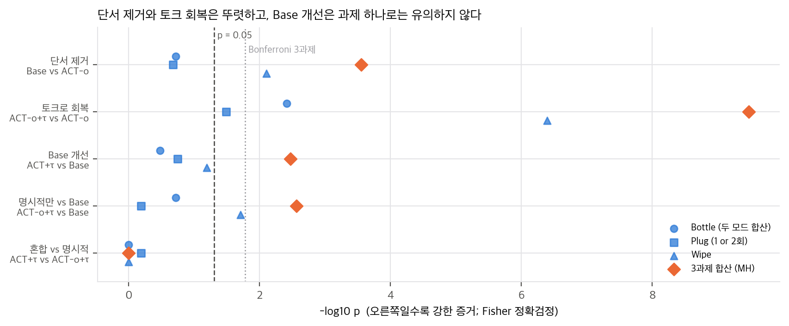
직접 그림: 비교별 과제 Fisher p(파란 점)와 3과제 합산 MH p(주황 마름모).
2×2로 보면 δ와 τ는 서로를 대신한다. 실험은 목표(leader/follower) × 입력(q/q + τ)의 2×2입니다. 성공률 차이(%p)로 효과를 나누면 다음과 같습니다.
| 과제 | τ 효과 (leader 목표) | τ 효과 (follower 목표) | 목표 효과 (τ 없음) | 목표 효과 (τ 있음) |
|---|---|---|---|---|
| Bottle | +20 | +50 | +25 | −5 |
| Plug (1 or 2회) | +40 | +50 | +30 | +20 |
| Wipe | +30 | +80 | +45 | −5 |
leader 목표(δ)는 τ가 없을 때만 25–45%p를 벌어 주고, τ가 있으면 차이가 거의 사라집니다. τ의 효과도 δ가 없을 때 더 큽니다. 두 신호가 겹치는 정보를 준다는 뜻이고, 저자 결론("proxy matches, surpasses, or further enhances")과 맞습니다. 다만 칸마다 10–20회라 상호작용 자체를 검정할 힘은 없습니다(서술 통계).
Soft Bottle Press를 판별 문제로: 무른 병에서는 누르고 단단한 병에서는 물러나야 성공이므로, 항상 누르는 정책의 전체 성공률은 50%입니다. Youden J = (무른 병 성공률) + (단단한 병 성공률) − 1로 바꾸면 Base ACT 0(항상 누르는 정책과 같음), ACT-o −0.5, ACT + τ 0.4, ACT-o + τ 0.5입니다. Base ACT의 "전체 50%"는 판별 능력 0이라는 뜻입니다.
Plug의 두 번째 시도: 1회 → 1 or 2회로 얻은 점수는 Base +10%p, ACT + τ +30%p, ACT-o 0, ACT-o + τ +40%p입니다. 토크 변형의 이득 상당 부분이 재시도 규칙에서 나옵니다. 1회 기준으로 ACT + τ vs Base는 4/10 vs 2/10(Fisher p = 0.63)입니다.
끝 구간(t ≈ 300 스텝 = 6 s) 평균 F_x를 눈으로 읽었습니다(±50 effort, 픽셀 판독 아님).
| 높이 | 시연 | ACT | ACT + τ | ACT-o | ACT-o + τ |
|---|---|---|---|---|---|
| Base | −70 | −110 | −10 | −250 | −60 |
| Height 1 | −150 | −320 | −100 | −150 | −60 |
| Height 2 | −20 | −100 | −70 | −280 | −50 |
| 시연과 차이 평균 | — | 약 100 | 약 55 | 약 150 | 약 45 |
평균으로는 토크 변형이 시연에 더 가깝습니다. 하지만 Height 1에서는 ACT-o가 시연과 거의 같고, ACT-o + τ는 90 정도 벗어납니다. 신뢰 띠(±200 정도)도 크게 겹칩니다. 더 중요한 점은 F_x가 중력을 보상하지 않은 effort를 J(θ)로 환산한 값이라는 것입니다(Sec. V-D). 시연이 0이 아닌 값에 머무는 것(캡션 "settles into a steady, non-zero value")도 이 때문으로 보입니다. 멈춘 자세가 몇 cm만 달라도 중력 성분이 달라지므로, 이 그림은 접촉력 비교로는 깨끗하지 않습니다.
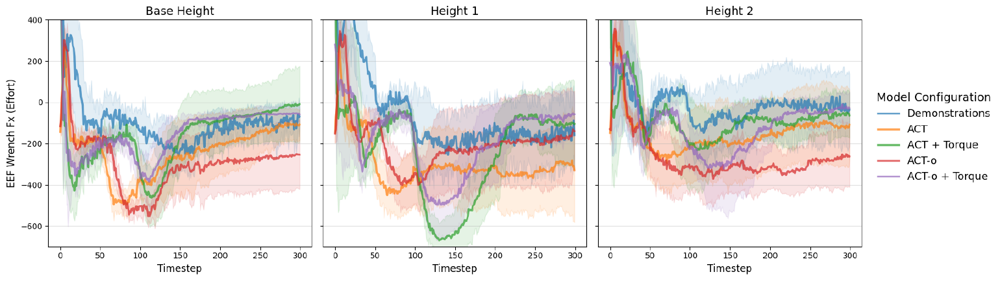
논문 Fig. 4: Foam Stop 말단 F_x(effort 단위) 평균, 높이 3단. © 저자, CC BY 4.0.
| 항목 | ACT 공개 README 예시 | 논문 Table III |
|---|---|---|
| KL β, chunk, d_hidden, d_ff | 10, 100, 512, 3,200 | 같음 |
| batch | 8 | 16 |
| epoch | 2,000 | 8,000 |
| lr | 1×10⁻⁵ | 2×10⁻⁵ |
chunk 100은 50 Hz에서 2.0 s입니다. 논문은 temporal ensembling 사용 여부를 적지 않았습니다. 쓰지 않으면 chunk를 끝까지 실행하는 동안 최대 2 s가 열린 루프입니다. 쓰면 공개 코드의 가중(w_i = exp(−0.01 i), i = 0이 가장 오래된 예측, imitate_episodes.py:255)에서 실행 명령의 평균 나이가 1.15 s입니다. 어느 쪽이든 단단한 병의 토크 스파이크에 반응해 물러나는 데는 수백 ms 이상의 지연이 생길 수 있습니다. 반응 지연은 판별 성공률에 직접 영향을 주는데 보고되지 않았습니다.
목적. §5의 열린 질문(ACT-o + τ가 어떻게 누르는가)과 §1의 구동 toy를 폐루프로 확인한다. 시연을 만들고 정책 네 변형(Base ACT, ACT + τ, ACT-o, ACT-o + τ)을 학습한 뒤 P 서보에서 재생해, 유지 힘이 시연(6 N)을 얼마나 복원하는지, 접촉은 찾는지 본다. 표면 강성이 바뀌는 경우와 예측 편향·잡음에 대한 민감도도 함께 본다.
설정. analysis/extra_closedloop.py (numpy, 약 4초, 단일 스레드).
결과.
| 정책 | E1 학습 표면: 유지 힘 (N) | E1 접촉률 | E2 무른 패드: 유지 힘 (N) | E2 접촉률 |
|---|---|---|---|---|
| 이상적 재생 (목표 위치를 그대로 명령) | leader 6.00 / follower 1.67 | — | leader 4.46 / follower 1.24 | — |
| Base ACT | 5.97 | 1.00 | 1.84 | 1.00 |
| ACT + τ | 6.02 | 1.00 | 3.50 | 1.00 |
| ACT-o | 1.69 | 1.00 | 1.21 | 1.00 |
| ACT-o + τ | 1.73 | 1.00 | 1.37 | 1.00 |
편향 민감도(잡음 0, 학습 표면, 유지 힘 중앙값): 편향 −2 mm에서 Base 4.7 N, ACT + τ 5.1 N, ACT-o 0.2 N(접촉 없음), ACT-o + τ 0.2 N(접촉 없음). +2 mm에서는 Base 7.2 N, ACT + τ 7.6 N, ACT-o 3.2 N, ACT-o + τ 3.2 N이다. 기울기는 leader 목표가 약 0.6 N/mm, follower 목표가 약 0.7 N/mm다.
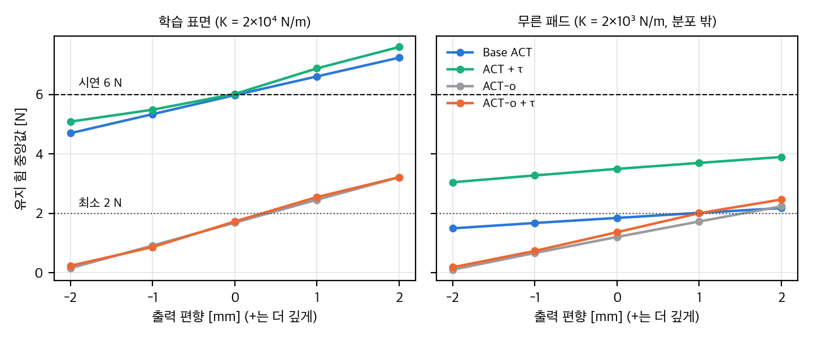
직접 그림(추가 검증 1): 출력 편향에 따른 유지 힘 중앙값(시드 10). 왼쪽은 학습 표면, 오른쪽은 학습 분포 밖의 무른 패드다. 점선은 시연 6 N과 최소 힘 2 N이다.
결론.
목적. §5와 추가 검증 1의 1-DoF toy가 관절이 여러 개인 팔과 위치 서보 시뮬레이션에서도 나오는지 본다. 닦기(수직력 유지)와 강성 판별(무른 물체는 누르고 단단한 물체에서는 물러남) 두 과제에서, 토크 입력과 qpos 이력 입력이 무엇을 바꾸는지 확인한다.
설정. analysis/extra_mujoco_wipe.py → analysis/extra_mujoco_wipe_results.json.
결과. 닦기 (시도 30회, 시드 평균)
| 정책 | 성공률 (시드별) | 접촉 중 평균 수직력 |
|---|---|---|
| Base ACT | 0.66 (0.80, 0.67, 0.50) | 5.93 N |
| ACT + τ | 1.00 (1.00, 1.00, 1.00) | 6.11 N |
| ACT-o | 0.00 | 3.07 N |
| ACT-o + τ | 0.00 | 2.92 N |
| ACT-o + qhist | 0.00 | 2.51 N |
강성 판별 (무른 15 + 단단한 15 × 시드 3, 시드 평균)
| 정책 | 무른 물체 누름 | 단단한 물체 물러남 | Youden J |
|---|---|---|---|
| Base ACT | 0.22 | 0.42 | −0.36 |
| ACT + τ | 0.40 | 0.00 | −0.60 |
| ACT-o | 0.09 | 0.11 | −0.80 |
| ACT-o + τ | 0.13 | 0.24 | −0.62 |
| ACT-o + qhist | 0.00 | 0.00 | −1.00 |
결론.
한계.
목적. 추가 검증 2의 토크 입력 정책이 토크를 실제로 따르는지 본다. 같은 짝(시드, 시도 번호)에서 무른 물체 시도에 단단한 물체의 토크 시간열을 넣고, 단단한 물체 시도에 무른 물체의 토크 시간열을 넣고, 토크를 0으로 고정했을 때 행동이 어떻게 바뀌는지 확인한다.
설정. analysis/extra_counterfactual_tau.py → analysis/extra_counterfactual_tau_results.json. 추가 검증 2에서 학습한 ACT + τ와 ACT-o + τ(시드 3). 짝 시도 30개 × 시드 3 = 90쌍. 주입은 시간 맞춤 개방 루프로, 기록된 토크 시열을 같은 시각의 정책 입력으로 쓴다. 팔의 운동은 정책이 폐루프로 정한다. 평가 시드는 학습 시드와 다르다. 장치는 CPU, 스레드 4, 실행 6.2 s. 접촉 시작 점검은 이 스크립트 안에서 시연 60회로 계산했다.
결과. 결과는 각 조건의 비율이다(무른 90회, 단단한 90회 중).
| 정책 | 조건 | 무른 물체: 눌림 / 물러남 | 단단한 물체: 물러남 / 계속 누름 |
|---|---|---|---|
| ACT + τ | 기준(실제 토크) | 0.38 / 0.09 | 0.00 / 0.02 |
| ACT + τ | 무른 물체에 단단한 토크 주입 | 0.24 / 0.03 | — |
| ACT + τ | 단단한 물체에 무른 토크 주입 | — | 0.67 / — |
| ACT + τ | 토크 0 고정 | 0.00 / 0.00 | 1.00 / 0.00 |
| ACT-o + τ | 기준 | 0.09 / 0.00 | 0.32 / 0.00 |
| ACT-o + τ | 무른 물체에 단단한 토크 주입 | 0.04 / 0.00 | — |
| ACT-o + τ | 단단한 물체에 무른 토크 주입 | — | 0.27 / — |
| ACT-o + τ | 토크 0 고정 | 0.00 / 0.00 | 1.00 / 0.00 |
Fisher 정확검정(물러남 비율, 기준 대비): ACT + τ의 무른 물체 주입은 p = 0.21, 단단한 물체 주입은 p = 3.7×10⁻²⁵. ACT-o + τ는 각각 p = 1.00, p = 0.51.
접촉 시작 점검(시연 60회, 힘이 처음 1.8 N을 넘는 시점): 토크 크기는 무른 0.68 ± 0.10 N·m, 단단한 0.75 ± 0.09 N·m. 5스텝 관절 이동량은 무른 0.033 ± 0.003 rad, 단단한 0.037 ± 0.003 rad.
결론.
한계.
목적. 실물 원격조작 데이터에서 δ = action − qpos와 관절 전류 대리값(effort)이 얼마나 같이 움직이는지 본다. 준정적 프레임에서 두 값이 강하게 맞물리는지, 중력 항을 빼면 무엇이 남는지, 잔차 기반 접촉 후보가 얼마나 일관되는지 확인한다.
데이터. LeRobot 공개 데이터셋 lerobot/aloha_static_screw_driver의 parquet 한 개(data/chunk-000/file-000.parquet, 1,286,640 bytes, 에피소드 50개 × 400프레임, 50 Hz, 관절 14개). 출처 URL은 https://huggingface.co/datasets/lerobot/aloha_static_screw_driver, 라이선스 MIT, 게이트 없음. 영상(videos/)은 받지 않았다. 에피소드 50개가 이 parquet 한 파일에 모두 들어 있다. 접촉 라벨은 없고 effort 단위는 데이터셋에 명시되어 있지 않다(원시값으로 씀). 과제는 나사 돌리기이며 논문의 과제와 다르다.
설정. analysis/extra_aloha_effort.py → analysis/extra_aloha_effort_results.json. numpy, scipy, pyarrow만 사용. 준정적 프레임은 관절 속도가 그 관절 중앙값 이하인 프레임이다. 중력 모델은 같은 팔 6관절의 sin·cos 선형 최소제곱이며, 에피소드 0–34로 학습하고 35–49로 검증했다(그리퍼 제외). 잔차 r = e − ĝ(q)의 준정적 MAD 기준 k σ(k = 2, 3, 4) 초과 프레임을 접촉 후보로 두었다. 불확실성은 에피소드 단위 부트스트랩 200회, 시드 0. 실행 4.6 s, 단일 프로세스(스레드 4).
결과.
| 관절 | 중력 모델 R² (검증, 준정적) | Spearman δ–e, 준정적 [95% CI] | 잔차 r과 δ의 Spearman (준정적) |
|---|---|---|---|
| 왼쪽 허리 | 0.56 | 0.78 [0.72, 0.82] | 0.46 |
| 왼쪽 어깨 | 0.83 | 0.94 [0.93, 0.95] | 0.30 |
| 왼쪽 팔꿈치 | 0.09 | 0.89 [0.88, 0.90] | 0.72 |
| 왼쪽 팔뚝 회전 | 0.20 | 0.48 [0.44, 0.52] | 0.14 |
| 왼쪽 손목 굽힘 | 0.02 | 0.83 [0.80, 0.85] | 0.77 |
| 오른쪽 허리 | 0.18 | 0.93 [0.92, 0.94] | 0.78 |
| 오른쪽 어깨 | 0.29 | 0.90 [0.89, 0.92] | 0.74 |
| 오른쪽 팔꿈치 | 0.28 | 0.91 [0.90, 0.92] | 0.77 |
| 오른쪽 팔뚝 회전 | 0.06 | 0.71 [0.69, 0.74] | 0.45 |
| 오른쪽 손목 굽힘 | 0.33 | 0.78 [0.75, 0.81] | 0.73 |
| 손목 회전(좌·우) | ≈ 0 | 0.07, 0.27 | 0.09, 0.26 |
| 그리퍼(좌·우) | 적용 안 함 | 0.14 [0.08, 0.21], 0.09 [−0.06, 0.26] | 0.14, 0.09 |
준정적 최소제곱 기울기는 어깨 약 1.9×10⁴, 팔꿈치 약 1.8×10⁴ 원시 effort/rad이다. 접촉 후보의 |δ| 분리 AUC는 관절과 k에 따라 크게 흔들린다. 예를 들어 왼쪽 어깨는 k = 3에서 0.95, 오른쪽 팔꿈치는 k = 2에서 0.16이다. 일부 관절은 k = 3, 4에서 플래그가 0개라 AUC가 정의되지 않는다(부록은 결과 JSON).
결론.
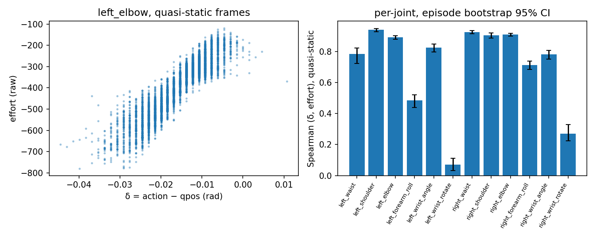
한계.
논문의 공식 코드와 데이터는 공개되지 않았습니다(2026-11-09, arXiv 페이지·논문 본문·GitHub 검색으로 확인, 02 §5). 그래서 코드 대조 대신 (1) 논문이 기반으로 삼은 ACT·ALOHA 공개 저장소에서 논문 해석에 필요한 사실을 확인하고, (2) Table IV를 다시 계산하고, (3) 핵심 물리 주장을 numpy toy로 점검했습니다.
대조한 저장소: tonyzhaozh/act @ 742c753(2024-01-28), tonyzhaozh/aloha @ 06369f0(2024-04-19). 논문의 ALOHA Solo는 Trossen이 낸 별도 소프트웨어를 썼을 수 있으므로, 아래는 "원조 ALOHA·ACT 기준"입니다.
| # | 확인한 것 | 위치 | 논문 해석에 주는 의미 |
|---|---|---|---|
| D1 | follower 팔 서보는 Position P gain 800, I gain 0 | aloha/aloha_scripts/robot_utils.py:174-175 |
하중이 있으면 정상상태 오차가 남음. 접촉 중 δ가 곧 누르는 힘(03 §1) |
| D2 | ACT 정책 입력은 현재 qpos 한 프레임 + 카메라 이미지. qvel·effort는 데이터에서 읽지만 쓰지 않음. qpos_history는 저장만 함 |
act/utils.py:37-38, 74, act/imitate_episodes.py:221, 240-249 |
δ는 입력이 아니라 목표에만 있음. 한 프레임으로는 강성 판별이 안 됨(03 §2) |
| D3 | 상태 차원 14 하드코딩(양팔 2 × 7), nn.Linear(14, hidden_dim) |
act/detr/models/detr_vae.py:58, 61, 69-70, 230, 258 |
한 팔 7 + effort 7 = 14가 구조 변경 없이 들어감. 논문의 "14차원 공유 임베딩"(Sec. IV-B)과 맞음(추정) |
| D4 | ALOHA 수집 스크립트는 effort를 이미 기록(/observations/effort, 14차원) |
aloha/aloha_scripts/record_episodes.py:130, 142, 160, real_env.py:75-80 |
기존 ALOHA 데이터에도 토크 대리값이 있음. 새 센서 없이 ACT + τ를 학습할 수 있음 |
| D5 | 기록되는 행동은 leader(master) 관절각 | aloha/aloha_scripts/real_env.py:140-149 |
Base ACT 목표 = leader. 논문 Table II와 같음 |
| D6 | temporal ensembling k = 0.01, i = 0이 가장 오래된 예측, 켜면 매 스텝 질의 | act/imitate_episodes.py:191-193, 255-257 |
평균 명령 나이 1.15 s(chunk 100, 50 Hz). 논문은 사용 여부를 적지 않음(03 §8) |
| D7 | README 예시: kl 10, chunk 100, hidden 512, batch 8, d_ff 3,200, epoch 2,000, lr 1e-5 | act/README.md:76-77 |
논문은 batch·epoch·lr만 다름 |
| D8 | 학습·추론 코드에 .cuda()가 8곳 하드코딩 |
act/imitate_episodes.py |
이 맥(CUDA 없음)에서는 수정하거나 LeRobot 구현을 써야 함(§4) |
| # | 주장 (출처) | 검증 방법 | 결과 | 판정 |
|---|---|---|---|---|
| C1 | Table IV 수치 (Table IV) | 내부 일관성: Bottle 전체 = 두 모드 평균, 성공 수 정수, n_total 산술 | 4개 변형 모두 일관. n_total 80/40/80/120과 일치 | 맞음 |
| C2 | δ를 지우면 접촉 과제가 무너진다 (Abstract, Sec. VI-A) | Fisher·Holm·MH | Wipe 12/20 → 3/20(Holm p = 0.024). Bottle·Plug는 과제별 비유의. 합산 MH p = 2.8×10⁻⁴ | 맞음(Wipe가 주도) |
| C3 | 토크가 ACT-o의 접촉 행동을 회복한다 (Sec. VI-A) | 같음 | 세 과제 모두 유의(p ≤ 0.033), 합산 p = 3.4×10⁻¹⁰ | 맞음 |
| C4 | 토크가 Base ACT도 개선한다 (Abstract "improve the base ACT policy") | 같음 | 과제별 p = 0.065–0.33(Holm 0.19–0.36), 합산 p = 0.0034. 단단한 병만은 p = 0.0007 | 합산으로만 유의. 과제별로는 미확정 |
| C5 | ACT-o의 실패는 암묵적 힘 인지가 사라졌기 때문 (Sec. VII) | P 서보 정상상태 해석 + toy T1 | follower 목표 재생 힘은 시연의 0.25–0.46배이고 대부분 중력 처짐. 실패는 "감지 상실"보다 "구동 여유 상실"로 더 직접 설명됨 | 해석 보완 필요 |
| C6 | 토크가 시각적으로 같은 강성 상태를 구분하게 한다 (Sec. VI-A) | toy T2 + Youden J | 같은 높이에서 qpos 한 프레임 0.51, 토크 1.00, qpos 5프레임 0.96. J: Base 0, ACT + τ 0.4, ACT-o + τ 0.5 | 맞음. 다만 qpos 이력 대조군 없음 |
| C7 | 전류 기반 τ = k_t I가 중력·마찰 보상 없이 충분하다 (Sec. III-C, IV-B) | toy T3 | 정지 마찰 띠(가정 0.83 N) 아래 힘은 검출률 0.32–0.62, 2 N 이상은 ≈ 1. 중력 미보상 시 검출률 0.84 → 자세 회귀 후 1.00 | 수 N 이상 사건에는 맞음. 1 N 미만은 근거 약함 |
| C8 | 토크 변형이 Foam Stop 평형 F_x에 더 가깝게 수렴 (Sec. VI-B4, Fig. 4) | 그림 판독(±50) | 평균 차이는 토크 변형이 작지만(약 45–55 vs 100–150), Height 1에서는 ACT-o가 가장 가깝고 띠가 겹침. F_x는 중력 미보상 | 부분적. 정량 근거 약함 |
| C9 | 토크 변형이 Plug에서 더 정확한 "adjustment-tap"을 배운다 (Sec. VI-B3) | 재시도 이득 계산 | 이득: Base +10, ACT + τ +30, ACT-o + τ +40%p. 1회 기준 ACT + τ vs Base 4/10 vs 2/10(p = 0.63) | 재시도 규칙에 크게 의존 |
| C10 | 혼합(δ + τ)이 명시적(τ만)보다 낫다는 암시 (Fig. 1의 이중 체크) | Fisher·MH | 모든 과제 p ≥ 0.65, 합산 p = 1.0 | 근거 없음 |
| C11 | 동기: kinesthetic·고투명 인터페이스 데이터에서도 τ가 단서를 대신 (Sec. I, III-A) | 실험 설계 검토 | 실제 실험은 같은 leader-follower 데이터에서 목표만 바꿈. 다른 수집 방식은 시험하지 않음 | 시험되지 않음 |
검산 스크립트: analysis/table_check.py(C1–C4, C6의 J, C9, 하이퍼파라미터), analysis/force_proxy_toy.py(C5–C7). 결과는 각각 table_check_results.json, force_proxy_toy_results.json입니다.
| 항목 | 상태 |
|---|---|
| 과제별 시연 수, 시연자 수 | 없음 |
| 학습 시드 수, 변형마다 몇 번 학습했는지 | 없음 |
| effort 단위(원시 전류 단위인지 N·m인지)와 정규화 | "raw effort values"(Sec. IV-B)라고만 함. k_t 값 없음 |
| 행동 차원 처리(한 팔 7차원을 14 슬롯에 어떻게 넣었는지) | 없음 |
| temporal ensembling 사용 여부, chunk 실행 방식 | 없음 |
| 평가 순서(변형별 블록인지 섞었는지), 실패 판정 시간 한도 | "predefined time horizon"이라고만 함(Sec. V-D) |
| Board Wipe 성공의 "줄무늬" 판정 기준, 닦기 중 접촉력 | 없음 |
| Foam Stop의 J(θ) 계산, F_x 중력 기준값, 성공 판정 | 그림만 있음 |
| ALOHA Solo 서보 게인(P, I, D)과 소프트웨어 버전 | 없음(원조 ALOHA 기준 D1로 추정) |
| 하이퍼파라미터 선택 과정 | "적어도 한 변형이 성공 rollout을 내는지 눈으로 확인"(Sec. V-E) |
불가능합니다. 공식 코드·데이터·체크포인트가 없습니다. 하드웨어도 필요합니다: ALOHA Solo(Interbotix ViperX-300s follower + WidowX-250s leader), 카메라 3대(BEV, 측면, 손목), 과제 소품(지우개·보드, 잠금식 접이 병, 멀티탭과 플러그, 검은 폼). 논문은 학습에 RTX 4090·A6000·A5000, 추론에 RTX 4090을 썼습니다(Sec. V-A).
| 단계 | 판단 |
|---|---|
| Table IV 재계산, 물리 toy(T1–T4), 그래프 | ✅ 완료(numpy·scipy, 1–2초) |
| 1-DoF 폐루프 toy 확장(시연 생성 → 간단한 회귀 정책 4종 → P 서보에서 재생) | ✅ 설치 없이 가능(numpy, 수 분) |
| 공개 ALOHA 데이터(LeRobot 허브)의 effort·action·qpos로 δ–effort 관계와 접촉 검출 분석 | 조건부. CPU로 충분하지만 데이터 다운로드 승인 필요 |
| 시뮬레이션(MuJoCo, gym-aloha 계열)에서 ACT 네 변형 학습 | 조건부. ACT는 작아서(hidden 512, ResNet18 백본) MPS로 학습 가능해 보이지만 torch·mujoco 설치 승인이 필요하고, 원조 ACT 코드는 .cuda() 하드코딩(D8)이라 수정하거나 LeRobot 구현을 써야 함. 8,000 epoch 전체 재현은 수 시간–하루 이상으로 예상(미측정) |
| 실물 재현 | 불가. ALOHA Solo 하드웨어 필요 |
장벽은 GPU보다 하드웨어와 접촉 과제 데이터입니다. ACT 자체는 작은 모델이라 GPU가 결정적이지 않습니다. 다만 시뮬레이터의 접촉·서보 모델이 실물 Dynamixel의 전류·마찰과 다르므로, 시뮬레이션 결과로 "전류 대리값이 충분하다"를 확인할 수는 없습니다.
쉽습니다. 기존 ACT·LeRobot 파이프라인에서 세 줄짜리 변경입니다.
action 대신 미래 qpos로 바꿈.어려운 부분은 구현이 아니라 평가입니다. 이 논문의 빈칸을 채우려면 (1) 닦기 중 실제 접촉력(외부 F/T나 effort 로그), (2) qpos 이력·qvel 입력 대조군, (3) 여러 시드, (4) 판별 과제의 Youden J, (5) 재시도 없는 1회 성공률을 함께 보고해야 합니다. 그리고 03 §1의 해석대로라면, leader가 없는 데이터에서 Base ACT식 구동 여유를 되살리는 방법은 τ를 입력에 넣는 것보다 목표에 넣는 것(q_target = q_follower + K_p⁻¹(τ − τ_g(q)), DexForce식)이 더 직접적입니다.
번호 [n]은 논문의 참고문헌 번호입니다. 각 참고문헌을 따로 열어 검증하지는 않았습니다. "내 사전 지식"이라고 적은 항목은 논문 밖의 정보라 확인이 더 필요합니다.
[저비용 양팔 원격조작 + action chunk 모방학습]
ACT·ALOHA [1] (RSS 2023) → Mobile ALOHA [15] (CoRL 2024) → ALOHA Unleashed [16] (CoRL 2024)
↳ leader 관절각을 행동으로 기록, follower는 P 위치 서보로 추종 → δ = q_leader − q_follower가 데이터에 자연히 생김
│
[힘 정보를 모방학습에 넣는 두 갈래]
(a) 전용 센서: F/T few-shot IL [6] (RA-L 2025), CoinFT [12], UMI-FT [13] (ICRA 2026)
(b) 대형 모델에 힘·토크 융합: TA-VLA [7] (CoRL 2025), ForceVLA [8] (NeurIPS 2025)
│
[원격조작 방식 자체로 힘을 다루기]
양방향(bilateral) 제어 + ACT: Bi-ACT [9] (AIM 2024), Bi-LAT [10] (RO-MAN 2025)
햅틱 피드백 원격조작 + 가변 컴플라이언스 학습 [11] (IROS 2024)
│
★ Beyond Implicit Force: 비양방향 leader-follower 데이터에서
(1) 목표를 follower 상태로 바꿔 δ를 지우고(ACT-o),
(2) 서보 전류 토크를 proprio 입력에 붙여(+τ) 회복되는지를 실물 2×2로 비교
차별점 요약: [6]–[8], [12]–[13]은 전용 센서나 대규모 모델을 전제하고, [9]–[11]은 원격조작 장치를 바꿉니다. 이 논문은 장치를 바꾸지 않고, 이미 있는 데이터의 학습 목표와 입력 채널만 바꿔서 암묵적 단서와 명시적 대리값을 분리합니다. 실험 설계는 목표(leader/follower) × 입력(q/q + τ)의 2×2 요인 설계입니다.
| 역할 | 출처 | 이 논문에서의 쓰임 |
|---|---|---|
| 정책 구조 | ACT [1] (CVAE + Transformer, chunk) | 그대로. 목표와 입력 차원만 바꿈(Eq. 1, 3, 5) |
| 하드웨어 | ALOHA Solo, Interbotix ViperX-300s / WidowX-250s [14] | 한 팔 leader-follower, 카메라 3대, 50 Hz |
| 토크 대리값 | Dynamixel 서보 전류 × 토크 상수(τ = k_t I) | 보상 없이 입력. Foam Stop 분석에만 J(θ)로 말단 렌치 환산(Eq. 2, 4) |
| 평가 지표 | 과제 성공률 [9]–[11] | Table IV, Foam Stop만 F_x 곡선 |
| 비교 기준선 | Diffusion Policy [5]는 언급만, VLA [2]–[4]는 동기 | 실험 비교는 ACT 변형끼리만 |
| 논문 | 연결점 | 이 논문을 읽는 데 주는 것 |
|---|---|---|
DexForce (dexforce/, arXiv:2501.10356) |
관측 위치에 측정 힘을 더한 force-informed 목표 x_f = x_o + k_f f, 재생 힘 배율 G(k_f, k_e) | leader-follower 원격조작은 k_f = 1/K_p인 force-informed 목표를 센서 없이 만든다. Base ACT = G ≈ 1, ACT-o = G(0) ≈ 0(+ 중력). ACT-o의 붕괴는 DexForce가 "관측 위치만 쓰면 누르지 못한다"고 보인 것과 같은 현상(03 §1.2) |
Contact-Grounded Policy (contact_grounded_policy/, arXiv:2603.05687) |
미래의 실제 로봇 상태와 촉각을 예측하고, 학습된 contact-consistency mapping M_φ(x, u)로 compliance 제어기 목표(â = x̂ + Δ)를 만든다 | ACT-o + τ는 CGP에서 M_φ를 뺀 형태다. follower 상태를 예측하고 힘 신호를 보지만, 그것을 명령 여유로 바꾸는 단계가 없다. 03 §5의 "ACT-o + τ는 어떻게 누르는가" 질문에 CGP가 구조적 답을 준다 |
NestDex (nestdex/, arXiv:2608.13362) |
leader-follower 팔 + ACT식 chunk·temporal ensembling. inner 손 정책 입력이 30스텝 × [관절 위치, 관절 effort] | NestDex는 effort를 이력과 함께 넣었다. 이 논문은 한 프레임만 넣었다(03 §2의 qpos 이력 대조군과 같은 축). NestDex 공개 데이터에서 유지 effort가 잡기 성공을 AUC 0.91로 갈랐던 것은 전류 대리값이 수 N 수준 사건에는 충분하다는 이 논문의 결과와 맞다 |
Real-Time Force Regulation (reactive_grasp/, arXiv:2609.30082) |
촉각 없이 관절 토크로 접촉력을 분배하는 QP. 명령 토크 τ = Jᵀ f는 Jᵀ의 null space 성분을 담지 못한다 | 반대 방향(측정 토크 → 말단 힘)에도 같은 사영 문제가 있다. Foam Stop의 F_x는 J(θ)⁻ᵀ 환산이라 특이 자세 근처에서 잡음이 커지고, 중력 G(q)를 빼지 않으면 자세 차이가 힘 차이로 보인다(03 §7) |
GPT-as-Tactile-Policy (gpt6_astra_tactile/, arXiv:2610.28457) |
지식 × 관측 2×2 요인 설계와 반사실 입력 개입으로 "정말 촉각을 쓰는가"를 가림 | 이 논문도 목표 × 입력 2×2다. 상호작용을 계산하면 τ의 효과는 δ가 없을 때 훨씬 크다(Wipe: leader 목표에서 +30%p, follower 목표에서 +80%p, 03 §6). 반사실 개입(무른 병에 단단한 병의 토크를 넣기)은 하지 않아서, 정책이 τ를 "따르는지"는 아직 모른다 |
| 연구 | 관계 |
|---|---|
| DexForce (arXiv:2501.10356) | §3. 힘을 입력이 아니라 목표에 넣는 대안. 논문은 인용하지 않음 |
| Contact-Grounded Policy (arXiv:2603.05687) | §3. 상태 예측 + 명령 변환 |
| Adaptive Compliance Policy (Hou et al., 2024, 내 사전 지식) | 6축 F/T로 목표 자세와 함께 강성을 예측. 위치 서보의 고정 K_p 대신 컴플라이언스를 정책이 고르는 방향 |
| FACTR (Liu et al., 2025, 내 사전 지식) | leader-follower에 힘 피드백을 주고 외부 관절 토크를 정책 입력으로 쓰는 커리큘럼. 이 논문의 ACT + τ와 가장 가까운데 인용되지 않음 |
| Reactive Diffusion Policy (Xue et al., RSS 2025, 내 사전 지식) | 느린 정책 + 빠른 촉각·힘 반응 루프. 이 논문의 chunk 2 s 열린 루프 문제(03 §8)에 대한 구조적 해법 |
LeRobot ACT 구현 (huggingface/lerobot) |
공개 ALOHA 데이터셋과 ACT 구현을 함께 제공. 이 논문 변형을 재구현할 가장 쉬운 기반(04 §4) |
논문의 공식 코드, 데이터, 프로젝트 페이지는 찾지 못했습니다(arXiv abs 페이지에 링크 없음, 본문에 링크 없음, gh search repos로 제목·저자 검색). 아래는 기반·관련 저장소입니다. 별 수와 마지막 push는 GitHub API 값입니다.
| 저장소 | 관계 | 라이선스 | ★ | 마지막 push | 대조 commit |
|---|---|---|---|---|---|
tonyzhaozh/act |
ACT 원조 구현 [1]. 논문의 기반 | MIT | 2,330 | 2024-07-23 | 742c753 (2024-01-28) |
tonyzhaozh/aloha |
ALOHA 원조 수집·제어 코드(서보 게인, effort 기록) | MIT | 2,362 | 2024-04-19 | 06369f0 (2024-04-19) |
MarkFzp/act-plus-plus |
Mobile ALOHA [15]의 ACT·Diffusion Policy 구현 | MIT | 3,674 | 2024-05-15 | 대조 안 함 |
huggingface/lerobot |
ACT 구현 + 공개 ALOHA 데이터셋 | Apache-2.0 | 28,764 | 2026-11-08 | 대조 안 함 |
Interbotix/interbotix_ros_manipulators |
ViperX·WidowX ROS 드라이버 [14] | BSD-3-Clause | 183 | 2025-08-08 | 대조 안 함 |
ft-robotic/ForceVLA |
ForceVLA [8] 공식 코드 | Apache-2.0 | 118 | 2026-11-05 | 대조 안 함 |
ZZongzheng0918/Torque-Aware-VLA.github.io |
TA-VLA [7] 프로젝트 페이지(코드 아님) | 표기 없음 | 1 | — | — |
TrossenRobotics/aloha)는 API에서 404였습니다. 논문의 서보 게인이 원조 ALOHA(D1)와 같은지는 확인하지 못했습니다.